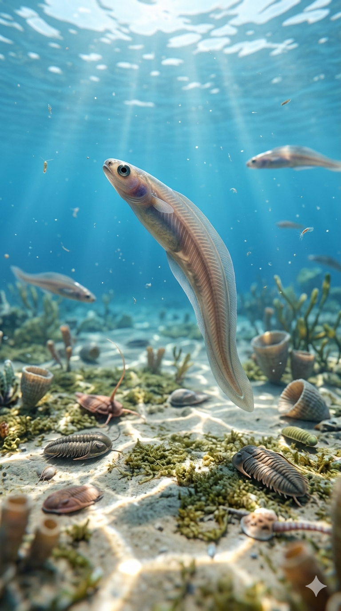
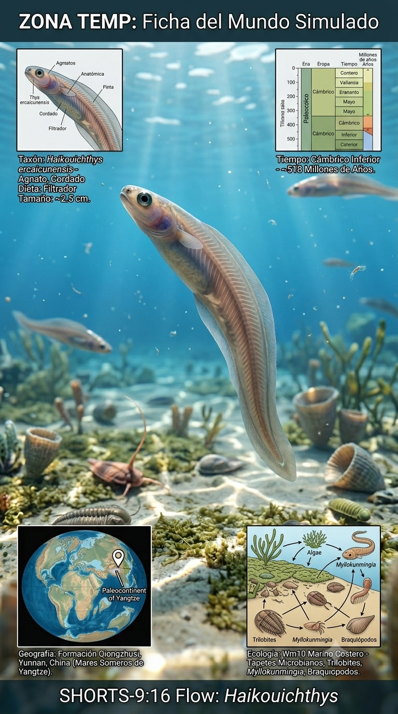
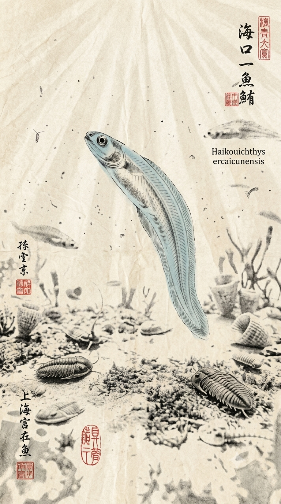
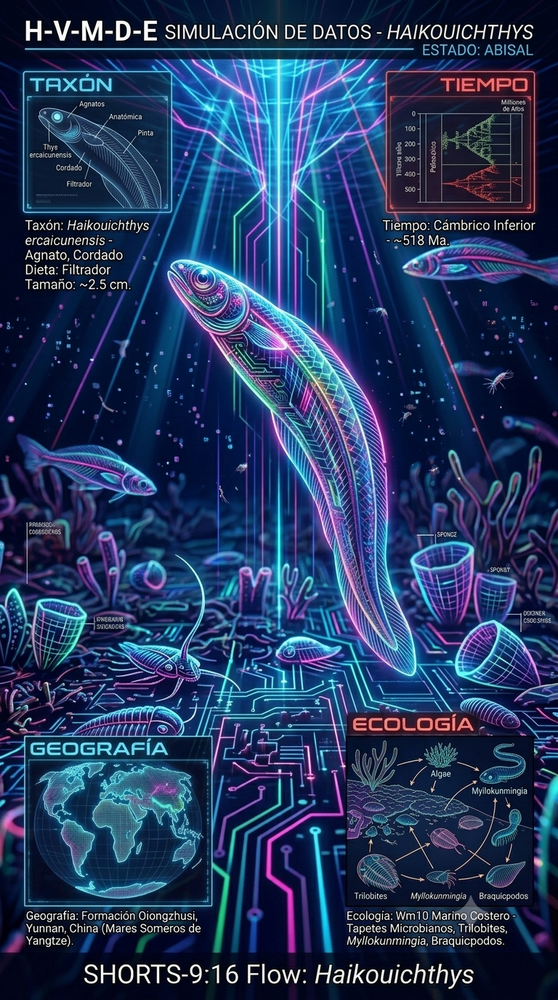

Paleoficha de Haikouichthys




Periodo: Cámbrico Inferior
Edad: Hace aproximadamente 518 millones de años.
Dieta: Filtrador de partículas orgánicas y plancton.
Distribución: Biota de Chengjiang, Yunnan (China).
TAXÓN:
Haikouichthys ercaicunensis
CLADO: Craniata / Stem-Vertebrata
DIETA: Filtrador de partículas orgánicas y plancton
TAMAÑO: Aproximadamente 2,5–3 cm de longitud
LOCOMOCIÓN: Natatoria; nado activo mediante ondulación corporal.
TIEMPO:
Cámbrico Inferior (Atdabaniense), aproximadamente 518 millones de años.
GEOGRAFÍA:
Biota de Chengjiang, Yunnan (China). Plataformas marinas poco profundas del antiguo continente de Gondwana. Ambiente paleoecológico de fondos marinos de plataforma interna con elevada sedimentación.
ECOLOGÍA:
Comunidad dominada por algas tapizantes y microorganismos. Compartía el ecosistema con Anomalocaris, trilobites, braquiópodos y otros cordados primitivos como Myllokunmingia. Ocupaba el nicho de consumidor primario y filtrador de la columna de agua, siendo presa potencial de grandes invertebrados depredadores.
CLIMA:
Wm10 (Marino costero). Condiciones oceánicas cálidas y bien oxigenadas, fundamentales para la explosión cámbrica.
ESTADO ECOLÓGICO:
Emergente. Representa uno de los primeros organismos conocidos con cráneo y una estructura esquelética primitiva basada en la notocorda.
Vídeo PalEntropía:
▶ Ver Short en YouTube